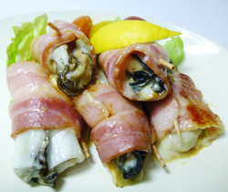

牡蠣のベーコン巻き
- 調理時間：30 分
- （一人当たり）
- カロリー：445kcal
- たんぱく質：21.5g
- 脂質：31.7g
- 炭水化物：18.2g
- 塩分：4.3g


＜2人分＞
- 牡蠣
(小さいときは倍量あってもよい） - 10個
- 塩・片栗粉
- 各少々
- ベーコン
- 10枚
- 長ネギ
- 1/3本
- チーズ
- 少々
- ・赤味噌
- 30g
- ・砂糖
- 大さじ1
- ・みりん
- 大さじ1
- ・料理酒
- 小さじ1
- サラダ油
- 少々
- 料理酒
- 大さじ1～2
- レモン
- 1/8個
田楽みそ A


- ＜牡蠣の下準備＞
牡蠣をボウルに入れ、塩・片栗粉を入れて手でもみ洗いし、その後に水で洗い流す。
キッチンペーパーで水気を拭きとっておく。 - ＜田楽みそをつくる＞
鍋に田楽みそＡの材料を入れ、よく混ぜて味噌を溶かしてから火にかけ練り上げる。
必要であれば水（分量外）を入れて、硬さを調節する。 - 長ネギはベーコンと同じ幅に短冊切りする。
- ベーコンの上に長ネギ、チーズを芯にして田楽みそを線に塗り、牡蠣を並べる。
（牡蠣が小粒なら２つ乗せる）
牡蠣の方を手前にして、くるっと巻く。端は破れないように爪楊枝で止める。 - フライパンに油をしき、ベーコン巻きを入れ、中火で焼き色をつける。ひっくり返し、料理酒を入れ、フタをして１分位、蒸し焼きにする。
- 牡蠣にしっかり火が通ったらお皿に盛り付け、レモンを添えて完成。
牡蠣のベーコン巻き
岩牡蠣と真牡蠣の違いをご存知ですか？
岩牡蠣の旬は主に夏で時間をかけて成長するため、殻と身が非常に大きく育つのが特徴です。ゆっくりと成長するため、真牡蠣にくらべて大きくて厚みがあり、ジューシーな味わいです。
真牡蠣の旬は主に冬。私たちの食卓にならぶのも多くは真牡蠣です。ゆっくり成長する岩牡蠣に対し、早く成長するのが特徴です。ですから大きさも小ぶりのものがほとんどなのですが、その旨味は濃縮されてプリプリでクリーミー。
産地によってもおいしさは異なりますので食べ比べをしてみるのもよいですね。